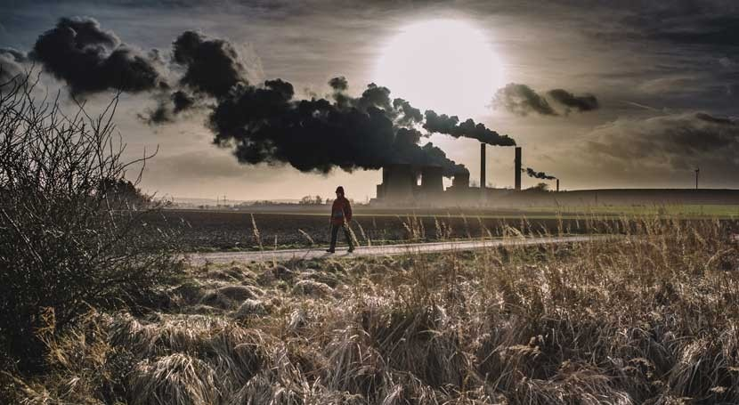
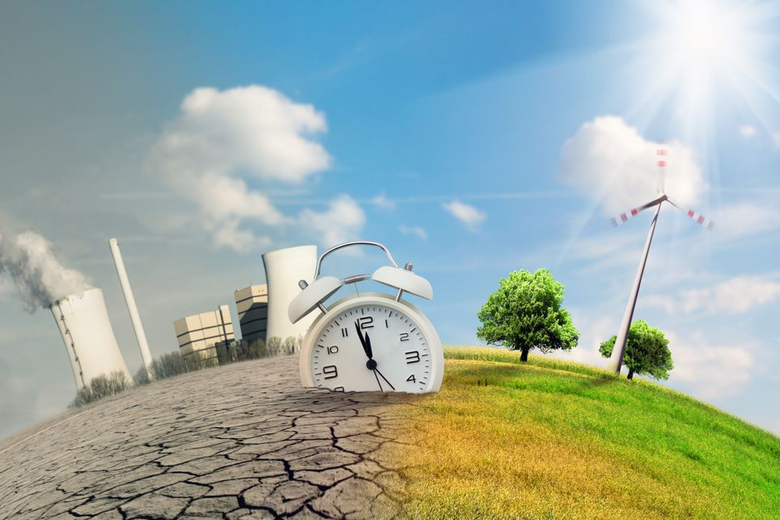

Titulo del primer Articulo
¿QUE ES CAMBIO CLIMÁTICO ?
titulo del segundo articulo
CAUSAS DEL CAMBIO CLIMATICO

El problema está cuando las actividades del ser humano aumentan la emisión de gases de efecto invernadero a la atmósfera y ésta retiene más calor del necesario, provocando que la temperatura media del planeta aumente y se produzca lo que popularmente llamamos calentamiento global.
- Transporte contaminante
- Edificios que necesitan rehabilitación energética
- La industria como causa del cambio climático
- Generación excesiva de residuos
- Agricultura y ganadería: sistema alimentario no sostenible
- . Derroche de energía
- Deforestación
